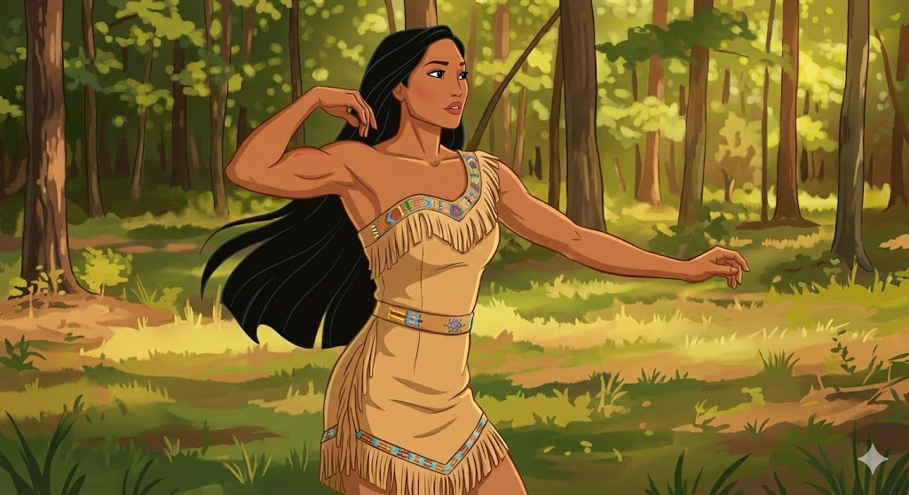
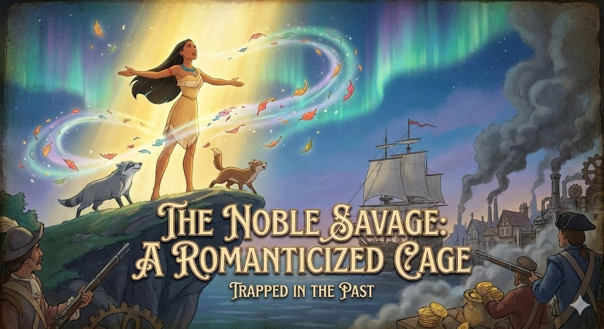
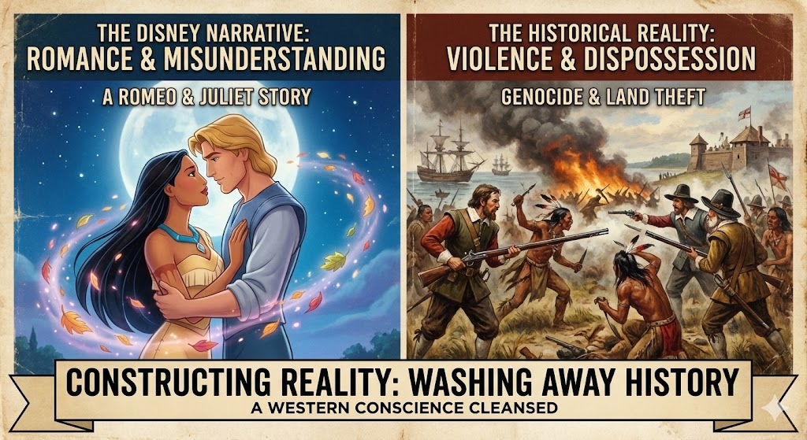

face הגוף הבלתי אפשרי
פוקהונטס ההיסטורית הייתה ילדה בת 12. בסרט, דמותה עוצבה בהשראת דוגמניות על (כמו נעמי קמפבל).
זהו ייצוג מגדרי בעייתי: המראה שלה הותאם ל"מבט הגברי" המערבי.
היא מוצגת כאישה סקסית ואקזוטית, עם שיער שתמיד מתנפנף ברוח וגוף עם פרופורציות לא ריאליסטיות, כדי למשוך את הקהל האמריקאי.

nature_people סטריאוטיפ "הפרא האציל"
הסרט משתמש בסטריאוטיפ "הפרא האציל": הילידים מוצגים כטהורים, רוחניים ומחוברים לטבע בצורה מיסטית ("צבעי הרוח"), בניגוד לאדם הלבן הטכנולוגי והחמדן.
לכאורה זהו דימוי חיובי, אך בפועל הוא מקבע את פוקהונטס כדמות "אחרת", פרימיטיבית ונאיבית, ששייכת לעבר ולא לעולם המודרני.

history_edu נרטיב רומנטי משכתב היסטוריה
הסרט בוחר בנרטיב של סיפור אהבה ("רומיאו ויוליה") כדי לטשטש את המציאות ההיסטורית האלימה של הכיבוש.
במקום לעסוק ברצח עם ובגזל קרקעות, הסרט מציג את הקונפליקט כאי-הבנה תרבותית שניתן לפתור בעזרת אהבה בין-גזעית. זהו מנגנון של הבניית מציאות המנקה את המצפון של הצופה המערבי.